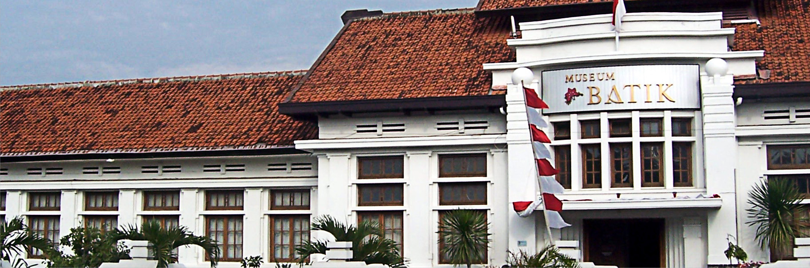
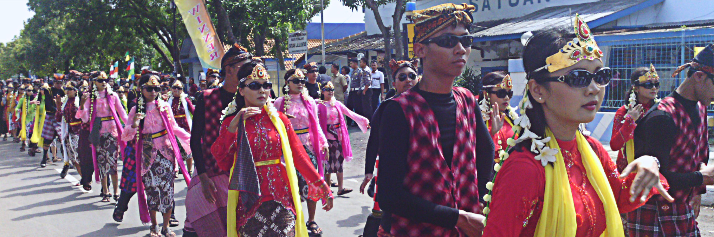

Museum Kota Batik Pekalongan
Museum Batik Pekalongan merupakan pusat data dan informasi mengenai batik. Koleksinya berupa batik klasik, lawasan hingga kontemporer. Yuk datang ke sini!

Kesenian Sintren Khas Pekalongan
Sintren adalah kesenian tardisional masyarakat Pekalongan dan sekitarnya, Sintren pada awalnya merupakan tarian yang berbau mistis/magis yang bersumber dari legenda cinta kasih Sulasih dan Sulandono yang berkembang di wilayah Pekalongan.

Kriuk-Kriuk Si Capret, Jajanan Tradisional dari Pekalongan
Renyah, garing, dan bikin nagih! Inilah kesan yang kamu dapatkan saat menggigit capret, camilan tradisional dari Kota Batik. Dengan beragam varian rasa, capret menjadi oleh-oleh khas di sana, lo. Yuk, borong kuliner satu ini!